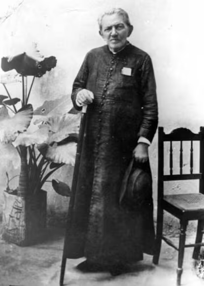

Juazeiro a Cidade Religiosa
Publicado em 30 de Abril de 2025

Juazeiro do Norte é uma cidade localizada no estado do Ceará, Brasil. É conhecida por sua rica história religiosa e cultural, sendo um importante destino de peregrinação para os devotos de Padre Cícero Romão Batista, uma figura central na religiosidade nordestina.